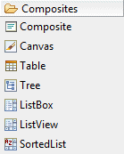
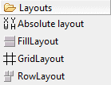
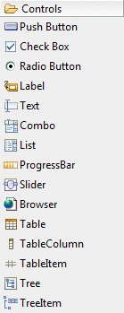
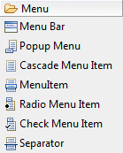
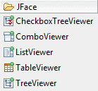

eRCP Designer Palette
eRCP Designer provides the following palette for creating SWT,
JFace and RCP
applications.
The palette may be fully configured using the
Palette Manager.
|
|
 |
- Composite - Instances of this class are controls which are capable of containing other
controls.
- Canvas - Instances of this class provide a surface for drawing arbitrary graphics.
- Table - Instances of this class implement a selectable user interface object that displays a list of images and strings and issue
notification when selected.
- Tree - Instances of this class provide a selectable user interface object that displays a hierarchy of items and issue
notification when an item in the hierarchy is selected.
- ListBox - Instances of this class represent a
selectable user interface object that displays a list of items
consisting of text and icons from a data model. Each list item
may include combinations of heading text, heading icons, detail
text, and detail icons.
- ListView - A widget that allows the user to select one
or more items from a collection of items that can be displayed
in a multi-column way with different styles..
- SortedList - Instances of this class represent a
selectable user interface object that displays a sorted list of
text items. The items may be displayed in ascending or
descending order..
|
|
|
 |
- Absolute (null) Layout - A null layout displays components with specified bounds.
- FillLayout - FillLayout is the simplest layout class. It lays out controls in a single row or column, forcing them to be the same size.
- GridLayout - Instances of this class lay out the control children of a Composite in a grid.
- RowLayout
- Instances of this class determine the size and position of the
children of a Composite by placing them either in horizontal rows or
vertical columns within the parent Composite.
|
|
|
 |
- Push Button - Instances of this class represent a selectable user interface object that issues notification when pressed and released.
- Check Box - Instances of this class represent a selectable user interface object that issues notification when checked and unchecked.
- Radio Button - Instances of this class represent a selectable user interface object that issues notification when selected and unselected.
- Label
- Instances of this class represent a non-selectable user interface
object that displays a string or image. When SEPARATOR is specified,
displays a single vertical or horizontal line.
- Text - Instances of this class are selectable user interface objects that allow the user to enter and modify text.
- Combo
- Instances of this class are controls that allow the user to choose an
item from a list of items, or optionally enter a new value by typing it
into an editable text field.
- List - Instances of this class represent a selectable user interface object that displays a list of strings and issues
notification when a string selected. A list may be single or multi select.
- ProgressBar
- Instances of the receiver represent is an unselectable user interface
object that is used to display progress, typically in the form of a bar.
- Slider - Instances of this class are selectable user interface objects that represent a range of positive, numeric values.
- Browser - A Browser implement the browser user interface
metaphor. It allows the user to visualize and navigate through HTML
documents (Eclipse 3.0 and above only).
- Table - Instances of this class implement a selectable user interface object that displays a list of images and strings and issue
notification when selected.
- Table Column - Instances of this class represent a column in a table widget.
- Table Item - Instances of this class represent an item (row) in a table widget.
- Tree - Instances of this class provide a selectable user interface object that displays a hierarchy of items and issue
notification when an item in the hierarchy is selected.
- Tree Item - Instances of this class represent an item (row) in a
tree widget.
|
|

|
- CaptionedControl - A CaptionedControl is used to
display a label (caption) in front of a control. An optional
trailing text can be used after the control, for example, to
indicate units of measurement..
- ConstrainedText - A single-line Text control which
constrains the user input by styles.
- TextExtension - This class contains methods for
extending the functionality of the Text control. The
functionality is specific to non-full keyboard devices.
- DateEditor - A special data entry control that allows
users to enter or choose a date.
- HyperLink - Instances of this class represent a
selectable user interface object that launches other
applications when activated by the end-user.
- ListBox - Instances of this class represent a
selectable user interface object that displays a list of items
consisting of text and icons from a data model. Each list item
may include combinations of heading text, heading icons, detail
text, and detail icons.
- ListBoxItem - Instances of this class represent an item
in a ListBox widget. Heading and detail icons, if provided, are
displayed at the size provided, or stretched to fit the ListBox
styles..
- ListView - A widget that allows the user to select one
or more items from a collection of items that can be displayed
in a multi-column way with different styles..
- SortedList - Instances of this class represent a
selectable user interface object that displays a sorted list of
text items. The items may be displayed in ascending or
descending order..
- Command - Command is a metaphor that represents a
general action. Command contains no information about the
behavior that happens when command is activated. The concrete
action is defined in a SelectionListener.
|
|
|

|
- Menu Bar - A menu bar.
- Popup Menu - A popup menu.
- Cascade Menu Item - Either a pull-down or cascaded menu.
- MenuItem - A simple menu item.
- Radio Menu Item - A radio button menu item.
- Check Menu Item - A checkbox menu item.
- Separator - A menu separator.
|
|
|
 |
- CheckboxTreeViewer - A concrete tree-structured viewer based on an SWT Tree control with checkboxes on each node.
- ComboViewer - A concrete viewer based on an SWT Combo control (Eclipse 3.0 and above only).
- ListViewer - A concrete viewer based on an SWT List control.
- TableViewer - A concrete viewer based on a SWT Table control.
- TreeViewer - A concrete viewer based on an SWT Tree control.
|
|